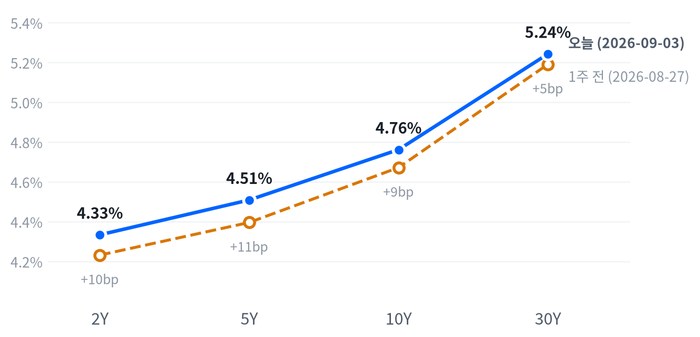

미 연준 이사 크리스토퍼 월러가 9월 FOMC에서 금리 동결을 지지하겠다고 밝히자 국채 금리가 일제히 하락했다. 뉴욕증시는 다우 1.18%, 나스닥 1.40% 오르며 최근 한 달 사이 가장 강한 하루를 보냈다.
같은 흐름 속에 금은 3.58% 급등해 사상 최고권에 다시 다가섰다. 잭슨홀 이후 형성된 9월 인상 우위 구도가 흔들렸지만 아직 확정된 것은 아니어서, 포트폴리오는 오늘 하루 반응만으로 방향을 바꾸지 않는다.
오늘 뉴욕증시를 움직인 것은 새 지표가 아니라 사람의 말이었다. 크리스토퍼 월러 연준이사가 "디스인플레이션에 기회를 주자, 한 번의 회의는 기다릴 수 있다"고 말하자 국채 금리가 일제히 밀렸고, 다우가 1.18%, 나스닥이 1.40% 올랐다.
이 발언은 8월 28일 잭슨홀에서 케빈 워시 의장이 만든 매파적 프레이밍에 대한 첫 유의미한 반박으로 읽혔다. CME 선물시장이 반영하던 9월 인상 확률은 장중 한때 66%대에서 54.6%까지 밀려났다. 금리 경로에 대한 확신이 옅어지자 국채·성장주·금이 함께 반응하는 익숙한 조합이 다시 나타났다.
포트폴리오는 오늘 반응만으로 방향을 바꾸지 않고 기존 스탠스를 다음 세션까지 그대로 유지한다. 확률 이동폭이 정책 판단을 되돌리는 문턱(15%포인트)에는 못 미쳤기 때문이다. 다만 무효화 조건으로 걸어둔 「다른 연준 위원의 완화적 발언 복귀」는 오늘 사실상 일어난 셈이라, 다음 발언과 내일 나올 8월 고용보고서가 이 흐름의 진짜 시험대다.
내일 고용보고서가 컨센서스를 크게 웃돌아 임금과 헤드라인이 함께 튀면 오늘의 되돌림은 하루짜리 소음으로 남고 인상 우위 구도가 되살아난다. 반대로 실업률이 4.2%를 다시 넘어서면 동결을 넘어 인하 논의까지 열릴 수 있다.
글로벌 마감
| 시장 | 지수 | 종가 | 전일 대비 |
|---|---|---|---|
| 아시아 | 닛케이225 | 64,325.64 | −2.85% |
| 아시아 | 항셍 | 25,311.21 | −0.07% |
| 아시아 | 상해종합 | 3,941.39 | −0.97% |
| 유럽 | DAX | 25,839.33 | −0.50% |
| 유럽 | FTSE100 | 10,756.50 | −0.30% |
| 유럽 | 유로스톡스50 | 6,362.15 | −0.11% |
| 미국 | VIX | 14.32 | −5.79% |
아시아 증시는 엇갈린 흐름 속에서도 대체로 하락 마감했다. 닛케이가 2.85% 밀렸고 항셍(−0.07%)과 상해종합(−0.97%)도 약세로 하루를 마쳤다. 유럽 역시 엇갈린 채 세 지수가 나란히 소폭 내렸다.
아시아·유럽이 만든 약세 분위기와 정반대로 미국 증시는 크게 뛰어올랐다. 월러 발언 하나가 전날 해외 장의 흐름을 완전히 뒤집은 셈이다.
야간 선물은 이미 방향을 정하고 있었다. S&P500 선물(ES)은 01:00(ET) 7661.25에서 저점을 찍은 뒤 09:00(ET) 무렵 7706.25까지 올라 고저폭이 0.59%에 그쳤다. 나스닥100 선물도 01:00 저점(29075.0)에서 04:00 고점(29292.75)까지 0.75% 오르며 밤사이 매수 우위를 확인시켰다.
이 흐름은 그대로 현물 갭으로 이어졌다. 지수는 전일 종가보다 0.26%, 나스닥은 0.43%, 러셀2000은 0.51% 높게 출발했다.
마감 위치를 보면 S&P500은 하루 고저 구간의 87% 지점까지 올라와 '고점권'에서 장을 마쳤다. 나스닥(81)과 러셀2000(64)은 그보다 낮은 '중단' 자리에서 멈췄다. 이 경계는 최근 2,259거래일 종가 위치의 분포에서 상위 84.6%·하위 25.1%를 기준으로 매일 다시 잰 값이다.
오늘 하루를 지배한 것은 단 하나의 재료였다. 월러 이사의 동결 지지 발언이 오전 내내 국채 금리를 끌어내렸고, 그 되돌림이 오후로 갈수록 커지며 지수 상승폭을 키웠다.
자산 전체 움직임 가운데 43.5%가 주식 한 덩어리에서 나왔다는 계산도 이 하루가 얼마나 한 방향으로 쏠렸는지 보여준다. 상위 세 개 공통 요인까지 넓히면 74.8%까지 늘어나, 서로 다른 자산으로 보여도 실제로는 비슷한 베팅이 많이 겹친 하루였다는 뜻이다.
시간외에는 스노우플레이크가 실적 서프라이즈로 20%대 급등했고, 엔비디아는 오픈웨이트 AI 플랫폼 허깅페이스를 130억 달러에 인수한다는 소식에 1.80% 올랐다. 두 소식 모두 개별 기업 재료였다는 점에서, 오늘 지수를 움직인 거시적 동력(월러 발언)과는 결이 다른 곁가지였다.
S&P500은 오늘 7,748로 마감해 최근 2년(504거래일) 가운데 이보다 높았던 날이 닷새뿐일 만큼 높은 자리에 서 있다. 오늘 상승폭(1.06%)은 이 지수의 평소 하루 움직임의 1.33배 정도로, 급등치고는 크기 자체가 유별나지는 않았다. 반대편에서는 VIX가 이보다 낮았던 날이 23일뿐일 만큼 낮은 자리로 내려앉아 위험 신호와는 거리가 멀다.
| 지수 | 종가 | 등락률 |
|---|---|---|
| 나스닥종합 | 26,584.06 | +1.40% |
| S&P500 성장주 | 140.74 | +1.31% |
| 다우존스 | 53,686.11 | +1.18% |
| S&P500 | 7,747.71 | +1.06% |
| S&P500 가치주 | 238.37 | +0.68% |
| 러셀2000 | 2,968.27 | +0.51% |
| 섹터 | 등락률 |
|---|---|
| 금융 | +1.56% |
| 임의소비재 | +1.39% |
| 기술 | +1.29% |
| 부동산 | +1.19% |
| 산업재 | +1.03% |
| 커뮤니케이션서비스 | +0.85% |
| 유틸리티 | +0.84% |
| 헬스케어 | +0.18% |
| 필수소비재 | −0.32% |
| 소재 | −0.62% |
| 에너지 | −0.74% |
장중 흐름
나스닥과 대형주 지수는 개장 직후인 09:30(ET) 무렵 나란히 저가를 찍은 뒤 14:00(ET) 무렵까지 거의 쉬지 않고 올랐다. 시가 대비 고점에서 각각 1.19%포인트·0.91%포인트 높은 자리까지 오른 뒤 그 근처에서 마감했다.
반면 러셀2000은 10:30(ET) 무렵 시가 대비 0.57% 밀리며 저점을 찍은 뒤 되돌림이 상대적으로 얕아 종가 상승폭이 0.51%에 그쳤다. 대형·성장주로 자금이 더 쏠렸다는 뜻이고, 성장주 지수가 가치주 지수보다 크게 앞선 것도 같은 그림이다. 엔비디아는 인수 소식에 시가 대비 고점에서 1.94%포인트까지 올랐다가 1.80% 상승으로 마감했다.
전략 해석
대형주 지수의 오늘 1.06%포인트 상승 가운데 기술 섹터가 0.44%포인트를 보탰다. 임의소비재(0.17%포인트)와 금융(0.17%포인트), 커뮤니케이션서비스(0.12%포인트)가 그 뒤를 이었다.
이 네 섹터가 상승분의 대부분을 만들었고 나머지는 기여가 작았다. 부동산과 소재는 개별 회귀로 기여도를 가르기 어려워 뺐고, 이 아홉 섹터로도 설명되지 않는 몫이 0.08%포인트 남는다.
앞서 짚은 마감 위치를 겹쳐 보면 오늘 상승은 대형 지수일수록 더 믿을 만했다. 고점권에서 마감한 지수는 다음 세션으로 그 힘이 이어질 여지가 크지만, 러셀2000처럼 상대적으로 낮은 자리에서 마감한 지수는 그만큼 되돌림 여력도 함께 남아 있다는 뜻이다.
성장주가 가치주를 앞선 흐름도 이 지수 간 온도차와 같은 방향을 가리킨다. 상위권에 오른 섹터의 성격도 눈여겨볼 만한데, 금융과 임의소비재처럼 경기에 민감한 섹터가 방어적인 유틸리티·필수소비재보다 크게 앞섰다.
이는 오늘의 랠리가 단순한 안전자산 회피가 아니라 금리 하락이 실물 경기 기대를 함께 밀어 올린 결과로 읽힌다는 뜻이다. 다만 주식과 금리가 반대로 움직이는 관계 자체는 최근 60거래일 기준으로 예전보다 느슨해졌다는 점도 함께 감안할 필요가 있다.
두 자산이 반대로 움직이는 정도가 직전 구간보다 옅어졌다는 것은, 앞으로 금리가 다시 오르는 날에도 주가가 예전만큼 자동으로 눌리지는 않을 수 있다는 뜻이다.
30년물은 오늘 5.243%로 마감해 최근 2년(504거래일) 가운데 이보다 높았던 날이 아흐레뿐일 만큼 높은 자리에 그대로 머물러 있다. 10년물(4.762%) 역시 이보다 높았던 날이 닷새뿐이다. 오늘 하루 금리 변화 자체는 10년물 −3.2bp, 30년물 −2.4bp로 평소 하루 움직임의 1배 안팎에 그쳐 크지 않았지만, 자리 자체는 여전히 고점권을 벗어나지 못했다.
| 만기 | 종가 | 전일比 | 1주 전 | 주간 변화 |
|---|---|---|---|---|
| 2Y | 4.334% | −5.2bp | 4.232% | +10.2bp |
| 5Y | 4.509% | −4.3bp | 4.396% | +11.3bp |
| 10Y | 4.762% | −3.2bp | 4.672% | +9.0bp |
| 30Y | 5.243% | −2.4bp | 5.191% | +5.2bp |

당일 기준으로는 짧은 만기일수록 금리가 더 크게 빠졌다(2년물 −5.2bp·30년물 −2.4bp). 2s10s는 전날보다 소폭 벌어져 하루 단위로는 완만한 강세 스티프닝이었다.
다만 1주일 단위로 보면 그림이 뒤집힌다. 전 만기 금리가 일제히 올랐고 짧은 쪽이 더 크게 올라(2년물 +10.2bp) 지난주 대비로는 약세 플래트닝이 진행됐다. 오늘의 되돌림은 그 주간 약세 흐름 안에서 하루 쉬어간 정도로 보는 편이 맞다.
명목금리를 실질금리와 기대인플레로 갈라 보면(9월 2일 기준 자료), 10년물의 지난 한 주 상승분 13bp 가운데 11bp가 실질금리에서 나왔다. 나머지 2bp만 기대인플레 몫이었다.
인플레이션 재점화가 아니라 성장 기대와 국채 수급, 기간프리미엄(만기가 길수록 더 얹어 받는 값)이 금리를 밀어 올린 한 주였다는 뜻이다. 실제로 10년물 기간프리미엄은 0.88%포인트로 최근 주간에도 계속 오르고 있어, 공급 부담 쪽에 더 가깝다는 판단을 뒷받침한다.
5년 뒤 5년 명목금리는 향후 5~10년 구간에 대한 시장의 장기 기대를 보여준다. 9월 2일 기준 5.04%로 하루 새 1bp 올랐고, 실질금리가 2.71%를 차지했다. 이 값이 크게 흔들리지 않았다는 것은 오늘의 성장·물가 재료가 장기 기대까지 흔들 사건은 아니었다는 뜻이다.
신용시장은 이 국채 약세를 위험 신호로 읽지 않았다. 하이일드 스프레드는 2.66%포인트로 하루 새 1bp 오르는 데 그쳤고, 투자등급 스프레드(0.81%포인트)는 오히려 변화가 없었다. 국채 금리가 밀린 것이 경기 우려가 아니라 공급·수급 요인이라는 판단과 맞아떨어지는 그림이다.
단기 자금시장 지표도 잠잠하다. 3개월 T-bill 금리는 3.78%, SOFR는 3.65%로 최근 주간에도 큰 변화가 없었다. 오늘 국채 커브가 크게 움직인 것과 달리, 실제 자금조달 비용 자체는 안정적으로 유지되고 있다는 뜻이다.
듀레이션 전략
장기물이 여전히 최근 이력의 최상단권에 머물러 있는 한, 서둘러 늘릴 이유는 없다. 금리 상승의 주된 힘이 기간프리미엄과 수급이라는 점은 장기물 쪽 흔들림이 당분간 계속될 수 있다는 뜻이기도 하다. 5년물 중심의 벨리 보유를 유지하고, 30년물 신규 확대는 그 프리미엄이 실제로 꺾이는 신호가 나올 때까지 미루는 편이 낫다.
달러지수(DXY)는 오늘 99.00으로 마감해 최근 흐름의 한가운데쯤에 자리한다. 달러/엔(158.92)은 높은 쪽 19% 안에 들 만큼 여전히 엔저 구간에 가깝고, 달러/원(1,358원)은 낮았던 날이 29일뿐일 만큼 원화가 강한 자리다.
이날 하루 DXY(−0.56%)·달러/엔(−0.79%)·달러/원(−1.05%)의 변동폭은 모두 평소 하루 움직임의 1.9배 안팎으로 컸다.
달러가 오늘 유난히 크게 밀린 것은 위험회피가 풀렸기 때문이 아니라 금리차가 좁혀졌기 때문이다. 월러 이사의 동결 지지 발언에 2년물 금리가 5.2bp 빠지면서 달러를 떠받치던 단기 금리 매력이 옅어졌고, 그 결과 DXY·달러/엔·달러/원이 나란히 크게 밀렸다.
엔화는 여기에 더해 안전자산으로서의 매수까지 겹쳤지만, 하락폭 자체는 달러/원(−1.05%)이 달러/엔(−0.79%)보다 컸다.
주요 페어 장중 흐름
달러/엔은 01:00(ET) 158.97까지 오른 뒤 17:30(ET) 무렵 155.29까지 밀리는 큰 폭의 하루를 보였다. 국채 금리 하락과 엔화 매수가 오후 들어 겹치며 달러 약세가 하루 종일 이어졌다는 뜻이다. 유로/달러는 1.1585로 −0.09%에 그쳐 세 통화 가운데 가장 잠잠했는데, 유로존 자체에 특별한 재료가 없었기 때문으로 보인다.
주식과 달러가 반대로 움직이는 경향은 최근 60거래일 기준으로도 이어지고 있지만, 그 강도는 직전 구간보다 옅어졌다. 오늘은 주가 상승과 달러 약세가 함께 나타나 이 관계와 같은 방향을 가리켰지만, 관계 자체가 느슨해진 만큼 앞으로도 매번 이렇게 맞물린다고 단정하기는 어렵다.
세 통화 가운데 달러/원의 낙폭이 가장 컸다는 점도 짚어둘 만하다. 달러 전반의 약세에 더해 원화 자체의 강세 재료가 겹쳤을 가능성을 시사하지만, 오늘 하루 자료만으로 그 재료를 특정하기는 어렵다. 유로/달러가 세 페어 가운데 가장 잠잠했던 흐름과는 뚜렷이 대비되는 대목이고, 원화 강세가 달러 약세보다 한 단계 더 나아갔다는 뜻이기도 하다.
금은 오늘 4,522달러로 마감해 최근 2년(504거래일) 가운데 높은 쪽 19% 안에 든다. WTI(91.83달러)는 그보다도 높아 높은 쪽 11% 안에 자리한다. 오늘 금(+3.58%)의 상승폭은 평소 하루 움직임의 2.2배로 컸던 반면, WTI(+0.90%)는 0.28배에 그쳐 사실상 잠잠했다.
금이 크게 뛴 것은 공급이나 수요보다 실질금리 되돌림 때문이다. 10년 실질금리가 부담스러운 자리까지 올라와 있던 터에 월러 발언으로 명목금리가 밀리자 금 보유의 기회비용이 낮아지며 매수가 몰렸다. 달러 약세까지 겹치며 상승폭을 더 키웠다.
WTI와 브렌트유의 가격차는 4.06달러로 평소 수준을 유지했다. 오늘 원유시장에는 공급·수요 쪽에서 새로 움직인 재료가 딱히 없었다는 뜻이다.
WTI·금 장중 흐름
WTI는 04:00(ET) 89.57달러에서 저점을 찍은 뒤 06:30(ET) 무렵 93.14달러까지 오르고서 91.83달러로 마감해 상승분을 절반가량 반납했다. 금은 02:00 4,463달러 저점에서 11:00 4,559달러 고점까지 오른 뒤 4,522달러로 마감했다. 고점 대비로는 살짝 밀렸지만 하루 상승폭 자체는 그대로 지켰다.
금과 금리의 상관은 최근 60거래일 기준으로 거의 무관한 수준까지 옅어졌다(직전 구간에서는 반대로 움직이는 경향이 더 뚜렷했다). 오늘처럼 금리 하락과 금 급등이 함께 나타난 날도 있지만, 관계 자체가 이렇게 느슨해진 상태에서는 금리 방향만 보고 금 값을 예단하기는 어렵다.
천연가스는 2.926달러로 하루 1.01% 내려 오늘 원자재 네 종목 가운데 유일하게 밀렸다. 원유·귀금속과 달리 계절적 수급 요인이 더 크게 작용하는 시장이라, 오늘의 거시 재료(금리·달러)와는 다소 결이 다른 움직임으로 봐야 한다. 브렌트유(95.89달러)도 WTI와 같은 방향으로 올랐지만 상승폭(+0.27%)은 WTI(+0.90%)의 3분의 1에도 못 미쳐, 두 유종 사이의 온도차가 오늘 하루 새 조금 더 벌어졌다.
국면은 연착륙을 사흘째 유지한다. 성장축 점수는 -0.43, 물가축 점수는 -0.39로 둘 다 지난주 넘어선 둔화 경계 안쪽에 머물러 있다.
신규 실업수당 청구 계열 지표들도 오늘 새로 나왔지만 이 판정을 바꿀 만큼 크지는 않았다. 국면이 다시 움직이려면 활동·소비 지표가 뚜렷이 반등하거나 물가 쪽에서 재가속 신호가 나와야 한다.
고용은 보합을 유지한다. 오늘 새로 나온 신규 청구·4주 평균·계속 청구 세 지표 모두 방향을 바꿀 만큼 크지는 않았다. 고용축 -0.08
| 지표 | Actual | Forecast | Previous | 발표일 | 판정 |
|---|---|---|---|---|---|
| JOLTS 구인건수 | 7,271K | — | 7,182K | 2026-07 | — |
| 신규 실업수당 청구 | 206,000 | 205,000 | 204,000 | 2026-09-03 | 상회▲ |
| 신규 청구 4주 평균 | 207,250 | — | 205,750 | 2026-09-03 | — |
| 계속 실업수당 청구 | 1,779,000 | — | 1,771,000 | 2026-09-03 | — |
| 비농업 고용(전월비) | -23K | — | +20K | 2026-07 | — |
| 실업률 | 4.1% | — | 4.2% | 2026-07 | — |
| 시간당 임금(MoM) | 0.05% | — | 0.29% | 2026-07 | — |
무엇이 나왔나. 신규 실업수당 청구는 계절조정 기준 206000건(전주 204,000건 대비 +2,000건)으로 늘었다. 서베이 컨센서스(약 205,000건)를 근소하게 웃돌았다.
무엇이 그것을 만들었나. 미 노동부(DOL) 원문은 전주 헤드라인이 203,000건에서 204,000건으로 위쪽 수정됐다고 밝혔다. 계절조정 전 실제 청구는 전주 대비 사실상 변화가 없었는데(+30건), 계절 요인은 1,226건 감소를 예상했었다.
그래서 어떻게 볼 것인가. 같은 날 나온 ADP 민간고용 서프라이즈 미스(8월 +38,000명, 컨센서스 +48,000명)와 겹치며 노동시장이 서서히 식어가는 그림을 강화했다. 다만 서프라이즈 폭 자체는 1,000건 안팎으로 크지 않아 고용축 점수를 움직이지는 못했다.
생산·활동과 소비는 지난주와 같은 악화 흐름을 유지했고, 물가는 같은 둔화 흐름을 유지했다. 오늘 세 축에는 신규 발표가 없어 점수도 그대로다. 생산·활동축 -0.36 · 소비축 -0.85 · 물가축 -0.39
연준의 다음 수는 9월 16일 FOMC에서 동결이 아니라 인상 쪽에 여전히 무게가 실려 있다. 케빈 워시 의장의 8월 28일 잭슨홀 매파 발언 이후 CME FedWatch 9월 인상 확률은 66%(9월 1일 기준)까지 올라섰다.
오늘 크리스토퍼 월러 이사가 동결 지지 의사를 밝히면서 이 확률은 장중 한때 54.6%까지 밀렸다. 이 하락폭(약 12%포인트)이 판단을 되돌리는 문턱(15%포인트)에는 못 미쳐 인상 우위 판단을 그대로 유지한다. 내일(9월 4일) 나올 8월 고용보고서가 컨센서스를 크게 밑돌거나 다른 연준 위원의 발언이 완화적으로 되돌아오면 이 판단은 무효화된다.
경로 판단은 전일과 같다.
채권만은 매크로와 포지션이 반대 방향을 가리킨다. 3~6개월 구조로 보면 물가 둔화가 실질금리 정점 통과로 이어져 장기물에 우호적이다.
다만 2~6주 스윙에서는 장기물 금리가 여전히 최근 이력의 최상단권에 머물러 있어 숏 바이어스를 유지한다. 두 판단은 시계가 다를 뿐이며, 그 프리미엄이 실제로 꺾이는 신호가 나오면 두 시계가 다시 합쳐진다.
신규 실업수당 청구 자체보다 같은 날 나온 월러 이사의 발언이 채권·주식 시장을 더 크게 움직였다. 청구 지표는 컨센서스를 소폭 웃돈 정도라 단독으로는 큰 반응을 만들 재료가 아니었다.
내일(9월 4일) 8월 비농업 고용보고서가 발표된다. 시장은 헤드라인 고용과 실업률, 시간당 임금 세 축을 함께 본다. 이어 9월 중순에는 8월 CPI와 9월 16일 FOMC 결정이 예정돼 있어, 이 판정을 다시 열 수 있는 다음 관문이다.
어제 걸어둔 트리거 가운데 등급을 움직인 것은 하나도 없었다. 주식은 대형주 지수의 50일선 상회폭이 2.15%로 확대 트리거(3.0%)에 못 미쳤다. VIX도 14.32로 축소 트리거(22.0)와는 거리가 멀어 중립을 그대로 유지한다.
채권은 30년물이 5.243%로 확대 트리거(5.40%)를 넘지 못했고, 축소 트리거(5.05%)도 밑돌지 않았다. 5s30s 주간 변화(-6.1bp)도 확대 트리거(+15bp)를 넘지 못해 숏 바이어스를 유지한다. 에너지·귀금속도 각각 WTI 5일 수익률(+9.97%)과 금 20일 수익률(+6.6%)이 확대 트리거에 못 미쳐 소폭확대를 그대로 지킨다.
메모리는 20일 초과수익이 -0.45%포인트로 중립 구간 안에 머물렀다. AI 인프라도 5일 초과수익이 -7.58%포인트로 중립권을 벗어나지 못해 두 자산군 모두 등급을 바꾸지 않는다. 결국 오늘은 전 자산군이 유지다.
메모리와 AI 인프라가 같은 중립이라도 속사정은 다르다. 메모리는 20일 초과수익이 마이너스로 살짝 돌아선 정도라 담담하게 지켜보는 국면이고, AI 인프라는 5일 초과수익이 크게 벌어져 있어 단기 낙폭이 가파르다. 두 값은 측정 기간이 달라 폭을 그대로 견주기는 어렵다는 점을 감안하자. 두 자산군 모두 하이퍼스케일러의 다음 분기 캐펙스 가이던스가 나올 때까지는 개별 종목 위주로 선별해 접근하는 편이 낫다.
| 자산군 | 등급 | 유지 | 전일대비 | 논거 | 다음 분기점 |
|---|---|---|---|---|---|
| 주식 | 중립 대형 성장주 선별, 소재·헬스케어·소형·가치 확대 | 3영업일 | 유지 | S&P500 50일선 상회폭 2.15%로 확대 트리거(3.0%) 미달, VIX 14.32로 축소 트리거(22.0)와도 거리가 멀다. | 50일선 상회폭 3.0% 상향 돌파 또는 VIX 22 상회. |
| 채권 | 숏 바이어스 벨리 OW, 5Y 중심 | 15영업일 | 유지 | 30년물 5.243%로 확대(5.40%)·축소(5.05%) 트리거 모두 미달, 5s30s 주간 -6.1bp로 확대 트리거(+15bp)도 못 미친다. | 30년물 5.40% 상회(확대) 또는 5.05% 하회(축소). |
| FX | 달러 소폭 숏 엔화는 DXY와 분리 점검 | 15영업일 | 유지 | DXY 20일 흐름 -0.97%로 확대 트리거(-3.0%) 미달, 종가 99.00으로 축소 트리거(101.0)와도 거리가 있다. | DXY 20일 -3.0% 이하(확대) 또는 종가 101 상회(축소). |
| 원자재 | 소폭확대 · 소폭확대 에너지: 호르무즈 리스크 추적 / 귀금속: 금 중심 | 3영업일 | 유지 | WTI 5일 수익률 +9.97%로 확대(+20%)·축소(+3.0%) 트리거 사이, 금 20일 +6.6%·5일 -1.9%로 역시 두 트리거 사이에 있다. | WTI 5일 +20% 상회(확대) 또는 +3% 하회(축소); 금 20일 +15% 상회(확대) 또는 5일 -8% 하회(축소). |
| 메모리 | 중립 AI 데이터센터 수요는 유효 | 6영업일 | 유지 | 20일 초과수익 -0.45%포인트로 OW 복귀(+5.0%p)·UW 검토(-12.0%p) 트리거 모두 미달. | 20일 초과수익 +5.0%p 상회(OW) 또는 -12.0%p 하회(UW 검토). |
| AI 인프라 | 중립 실적 모멘텀 종목만 선별 | 15영업일 | 유지 | 5일 초과수익 -7.58%포인트로 OW 복귀 트리거(+5.0%p)에 못 미친다. | 5일 초과수익 +5.0%p 상회 또는 하이퍼스케일러 캐펙스 가이던스 하향. |
리스크 시나리오
1) 고용보고서 서프라이즈. 내일 8월 고용보고서가 컨센서스를 크게 웃돌면 오늘의 금리 하락과 주가 상승은 하루 만에 되돌려질 수 있다. 채권 숏 바이어스는 유지되지만 주식 중립 등급의 축소 트리거(VIX 22)에 다가서는 계기가 될 수 있다. 같은 서프라이즈가 반대 방향으로 나오면, 즉 헤드라인이 컨센서스를 크게 밑돌면 이번에는 장기물 금리가 5.05%까지 밀리며 채권 숏 바이어스를 축소하는 쪽 논의가 열릴 수 있다.
2) 월러 발언의 후속 확인 실패. 다른 연준 위원들이 월러의 완화적 톤을 뒤따르지 않으면 오늘의 되돌림은 하루짜리 소음으로 남는다. 이 경우 장기물 금리가 다시 확대 트리거 방향(5.40%)으로 되밀릴 수 있다. 달러도 같은 논리로 반등할 수 있어, 이 시나리오가 현실화하면 FX 소폭 숏 포지션의 손익도 함께 흔들린다.
3) 금 과열 되돌림. 금이 사상 최고권에 다가선 만큼 되돌림 폭도 커질 수 있다. 금 5일 수익률이 -8%까지 밀리면 귀금속은 소폭확대에서 중립으로 축소된다.
달러가 101을 다시 넘어서는 경우도 같은 결론으로 이어질 수 있어, 이 두 조건을 함께 지켜봐야 한다. 세 시나리오 모두 이번 주 안에 판가름 날 가능성이 있는 만큼, 내일 고용보고서 발표 직후 트리거를 다시 점검할 필요가 있다.
이 포트폴리오는 자본이 아니라 자산마다 한 해 움직이는 폭으로 크기를 잰다(최근 611거래일 일간 수익률 기준). 등급 한 칸이 어느 자산이든 비슷한 크기의 베팅이 되도록 그 폭 대비 위험 예산을 0.75%p로 고정했다.
판단이 하나도 없는 중립 책에서는 주식·메모리·AI 인프라 세 슬리브가 전체 위험의 66.1%를 지도록 짰는데, 이 리포트가 주식시장 브리프인 만큼 의도한 배분이다. 환율 슬리브는 이 예산의 일부만 쓰는데, 통화는 오래 들고 있어도 기대할 수 있는 수익이 0에 가까워 같은 위험을 져도 돌아오는 몫이 작기 때문이다.
채권은 장기물과 단기물의 중립 비중을 각각 14%로 고정해, 듀레이션 방향을 바꾸는 판단과 채권 비중 자체를 늘리는 판단이 서로 섞이지 않게 했다.
실계좌가 아니라 모의 운용인 이 포트폴리오는 2026년 8월 14일 설정했다. 비교 대상(벤치마크)은 모든 등급이 중립인 같은 상품 구성이다. 거래비용과 슬리피지는 반영하지 않았고, 에너지 슬리브는 WTI 선물 상품(USO)이라 현물 유가 등락과는 소폭 차이가 난다.
원장에는 8월 28일 세션이 비어 있어, 그 앞뒤를 잇는 구간의 수익률은 표시된 거래일 수보다 실제로는 하루 더 걸쳐 있다.
설정일부터 오늘(9월 3일)까지 이 포트폴리오는 -0.62% 움직였다. 같은 기간 비교 대상은 -0.33% 움직여, 초과 성과는 -0.29%포인트로 아직 손해다.
표에 반영된 비중은 9월 2일 정한 등급을 기준으로 한다.
직전 한 주(8월 26일 종가부터 오늘까지)로 좁혀 봐도 포트폴리오는 -0.12%, 비교 대상은 -0.02%로 초과 성과가 -0.10%포인트였다.
당일 성과만 보면 포트폴리오는 +0.70%로 비교 대상(+0.59%)보다 나아 초과 성과가 +0.11%포인트로 돌아섰다.
어디서 벌고 어디서 잃었는지는 분명하다. 오늘 상승분의 대부분은 주식 코어(+0.41%포인트)와 귀금속(+0.18%포인트)에서 나왔다.
설정 이후 누적으로는 메모리(-0.56%포인트)와 AI 인프라(-0.35%포인트)가 가장 크게 깎아 먹었고, 에너지(+0.36%포인트)가 그나마 벌어들인 자리다.
| 슬리브 | 상품 | 비중 | 중립 대비 | 설정 이후 기여 |
|---|---|---|---|---|
| 주식 코어 | SPY | 39.14% | +0.14%p | -0.12%p |
| 채권 단기(1-3Y) | SHY | 19.48% | +5.48%p | -0.07%p |
| 귀금속 | GLD | 9.86% | +3.36%p | +0.06%p |
| 채권 장기(20Y+) | TLT | 8.35% | -5.65%p | +0.01%p |
| 달러 약세 | UDN | 7.24% | +7.24%p | +0.06%p |
| 에너지(WTI) | USO | 6.00% | +2.00%p | +0.36%p |
| AI 인프라 | MRVL·COHR·LITE·GEV·VRT | 3.50% | +0.00%p | -0.35%p |
| 메모리 | MU·WDC·STX | 3.45% | -0.05%p | -0.56%p |
| 현금성 | BIL | 2.98% | -12.52%p | +0.00%p |
오늘은 모든 등급이 전일과 같아 실제로 바뀌는 포지션은 없다. 원칙은 같다 — 오늘 바뀐 등급은 다음 거래일 종가부터 반영된다. 마감 뒤에 정한 것을 그날 종가에 담으면 결과를 미리 보고 산 셈이 되기 때문이다.
오늘 가장 크게 움직인 종목은 데이터센터 전력·냉각 인프라 기업 버티브(+4.73%)다. Utility Innovations를 최대 26억 달러에 인수해 AI 데이터센터의 '부지 선정에서 첫 토큰 생성까지'로 요약되는 전력 공급 병목을 해소하겠다고 발표한 영향이다. 같은 전력 인프라 테마로 묶이는 GE 버노바도 2.16% 올랐지만, 이쪽은 개별 촉매 뉴스가 확인되지 않아 테마 동반 상승으로만 짐작할 수 있다.
시간외에서는 스노우플레이크가 실적 서프라이즈에 20%대 급등했고, 엔비디아는 오픈웨이트 AI 플랫폼 허깅페이스를 130억 달러에 인수한다는 소식에 1.80% 올랐다. 반대로 브로드컴은 실적이 컨센서스를 웃돌고도 주가가 밀렸는데, 구체적인 하락폭까지는 확인되지 않았다.
| 종목 | 종가 | 등락률 |
|---|---|---|
| 마이크론 | 958.16달러 | +0.22% |
| 웨스턴디지털 | 441.57달러 | −1.63% |
| 시게이트 | 798.61달러 | −1.23% |
| 삼성전자 | 250,000원 | −0.20% |
| SK하이닉스 | 1,596,000원 | −1.05% |
업계 뉴스
메모리 3사에서 오늘 새로 나온 개별 촉매 뉴스는 확인되지 않았다. 최근 수 주 동안 마이크론·웨스턴디지털·시게이트는 AI발 D램·스토리지 수요로 연초 이후 200%대 급등을 기록했다. 이후 공급 과잉 우려와 금리 상승, 눈높이를 못 넘긴 가이던스 반응이 겹치며 반복적인 두 자릿수 조정을 겪어왔다.
방향이 오늘 종목별로 엇갈린 것도 지수 랠리와 무관하게 이 조정 국면이 이어지고 있다는 뜻으로 읽힌다.
투자 관점
메모리 바스켓의 지수 대비 20거래일 초과 성과는 +0.78%포인트로 크지 않다. 이를 세 축으로 나눠 보면 대형·소형주 축에서 +1.78%포인트를 벌었지만 반도체 지수 전체 대비로는 −9.23%포인트나 처져 있었다.
다만 마이크론 자신이 그 반도체 지수 구성 종목이라 이 반도체 열세를 마이크론 고유의 문제로 단정할 수는 없다. 이 축들로도 설명되지 않는 몫이 +7.15%포인트로 여전히 크고, 이 바스켓의 시장 민감도(베타)가 3.25배로 원래 크게 흔들리는 자산군이라는 점도 함께 감안해야 한다.
| 종목 | 분야 | 종가 | 등락률 |
|---|---|---|---|
| 버티브 | 데이터센터 전력·냉각 | 268.83달러 | +4.73% |
| GE 버노바 | 발전·전력 인프라 | 941.84달러 | +2.16% |
| 마벨 | 데이터센터 커스텀 반도체 | 208.83달러 | +1.14% |
| 코히런트 | AI 광통신 | 264.41달러 | −1.57% |
| 루멘텀 | AI 광통신 | 847.37달러 | −2.67% |
업계 동향
버티브의 인수는 규모(최대 26억 달러)만큼이나 방향성이 뚜렷하다. 회사는 이번 인수로 마이크로그리드 설계와 비하인드미터 전력 아키텍처, 에너지 저장 역량을 새로 갖추고 2026년 매출 성장률 가이던스 중간값을 31%로 제시했다.
마벨은 지난달 말 구글과의 커스텀 실리콘 계약(구글이 최대 122억 달러까지 마벨 주식을 매입할 권리를 갖는 조건)이 여전히 주가를 떠받치고 있지만, 오늘 새로 나온 개별 뉴스는 없었다. 코히런트·루멘텀은 올여름 내내 이어진 AI 광통신 밸류에이션 부담(주가수익비율이 각각 160배·146배 안팎)의 조정 국면 연장선에 머물렀다.
투자 관점
AI 인프라 바스켓의 지수 대비 20거래일 초과 성과는 −4.45%포인트로 부진했다. 세 축으로 나누면 성장·가치 축에서 −1.19%포인트, 대형·소형 축에서 −1.47%포인트, 반도체 축에서 −5.56%포인트씩 깎였고, 이 셋으로도 설명되지 않는 몫이 +3.77%포인트 남는다.
세 축이 합쳐 −8.22%포인트를 깎았고 종목별 요인은 오히려 +3.77%포인트를 되돌렸으니, 이 20거래일의 부진은 종목보다 요인 쪽에서 왔다. 다만 이것은 20거래일 분해라 오늘 하루의 온도차(버티브 강세·광통신 약세)를 설명하는 값은 아니다.